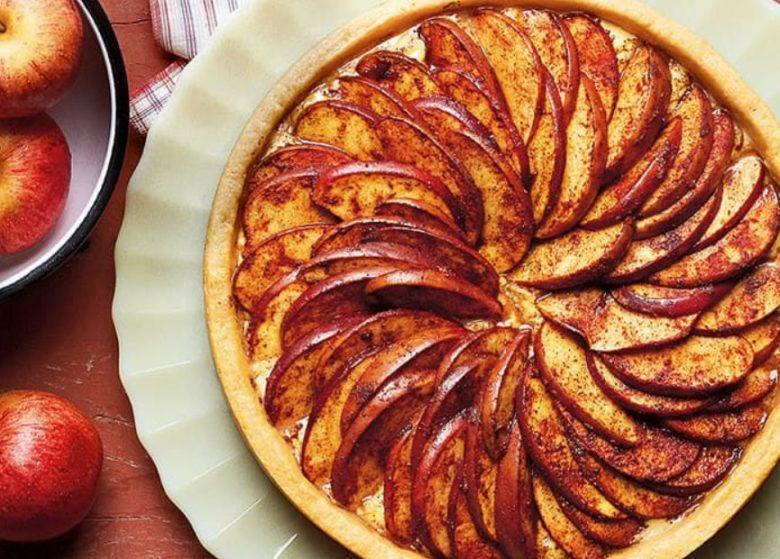

•2 e meia xícaras (chá) de farinha de trigo

1.Em um recipiente misture a farinha, o sal, o açúcar e o fermento.
Torta de Maçã
Ingredientes
•2 e meia xícaras (chá) de farinha de trigo
•1 pitada de sal
•2 colheres (sopa) de açúcar
•1 colher (chá) de fermento em pó
•1 colher (sopa) de manteiga
•1 lata de Creme de Leite
•6 maçãs médias descascadas
•1 e meia xícara (chá) de açúcar
•2 colheres (sopa) de manteiga
•3 colheres (sopa) de conhaque